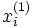
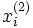
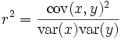
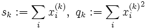
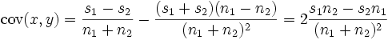
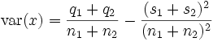
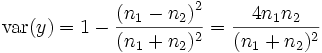
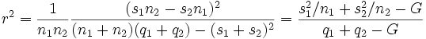
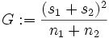
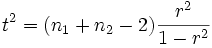

Glossary
A glossary of general terms
Contents |
r2 (Coefficient of Determination)
The coefficient of determination, or r2 value, is a statistical measure computed over a pair of sample distributions, giving a measure of how strongly the means of the two distributions differ. In a BCI context, the coefficient of determination is computed over signals that have been measured under two different task conditions, and represents the fraction of the total signal variance that is accounted for ("determined by") by the task condition.
Computation
The coefficient of determination is in fact the squared correlation coefficient for a single bivariate distribution constructed from two sets of univariate data as follows:
- There are n1 values  measured under condition 1, and n2 values  measured under condition 2.
- From these two data sets, a single, two-dimensional data set is constructed, consisting of points (x,y) by assigning the measured value to x, and setting y = + 1 if the value has been measured under condition 1, and y = − 1 for condition 2. The actual label values assigned to y do not matter, as long as they are distinct, but choosing +1 and -1 simplifies further computation.
- For any two-dimensional data set of points (x,y), the squared correlation coefficient is:
.
In the special case of the distribution defined above, defining
,
we have
,
,
,

where we have introduced  to arrive at the last expression, which is useful for efficient computation of r2.
Significance Test
For small numbers of trials (<30 per label), determination coefficients can become rather large even if there is no significant effect. To assess significance under the (robust) assumption of Gaussianity, determination coefficients may be converted into t-values according to
.
Such a t-value may be used in a one-tailed t-test against the "no correlation" null hypothesis.
Sensorimotor Rhythm (SMR)
A general term referring to idling activity from the sensory and motor cortices. The mu rhythm is the most prominent SMR activity.
![[BCI2000 Help]](../../images/bci2000logo_small.png)